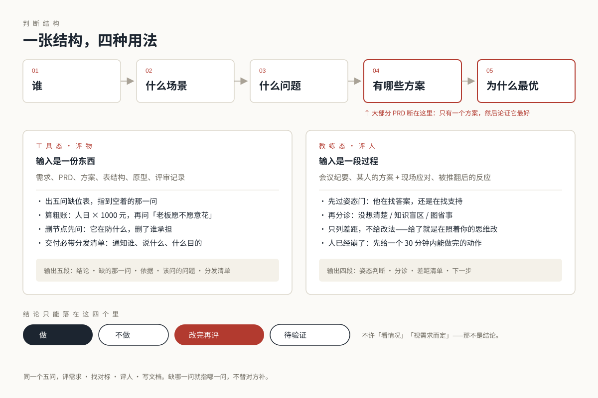
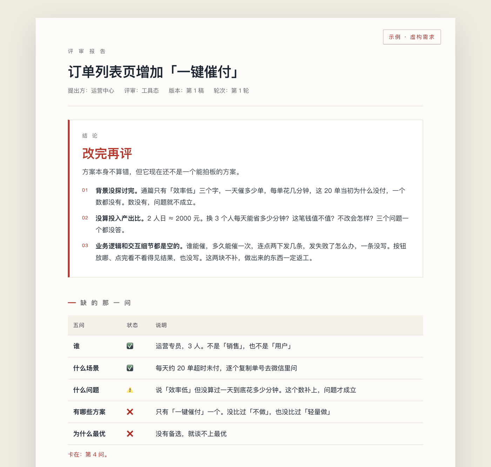

它不写 PRD，只指出你漏掉的那一问。

| 通用的 AI 产品顾问 | 这一套 | |
|---|---|---|
| 真相来源 | 你的提示词、模型的记忆 | 摆到桌面上的事实，和缺失的那一问 |
| 结论 | 面面俱到的建议 | 一句给死：做 / 不做 / 改完再评 / 待验证 |
| 方法 | RICE · KANO · AARRR 通用框架 | 五问主链 + 15 条硬规则 |
| 没依据时 | 编一个听起来合理的 | 标【引申】/【通用】，或者说「这块没给判据」 |
| 写 PRD | 直接帮你写一版 | 拒绝。只报差距，改法留给你自己出 |

打开完整示例（虚构需求，一轮评审）→不用敲命令。把仓库链接发给你的 AI 助手，说一句「装这个技能」：
https://github.com/ronchizhang/pm-ronchi
它会自己放进 ~/.workbuddy/skills/pm-ronchi。装完开个新对话，直接说：
「用产品Ronchi帮我看这个需求」「评审一下这份 PRD」。
要评人就明说「这次评人」，它默认评物。